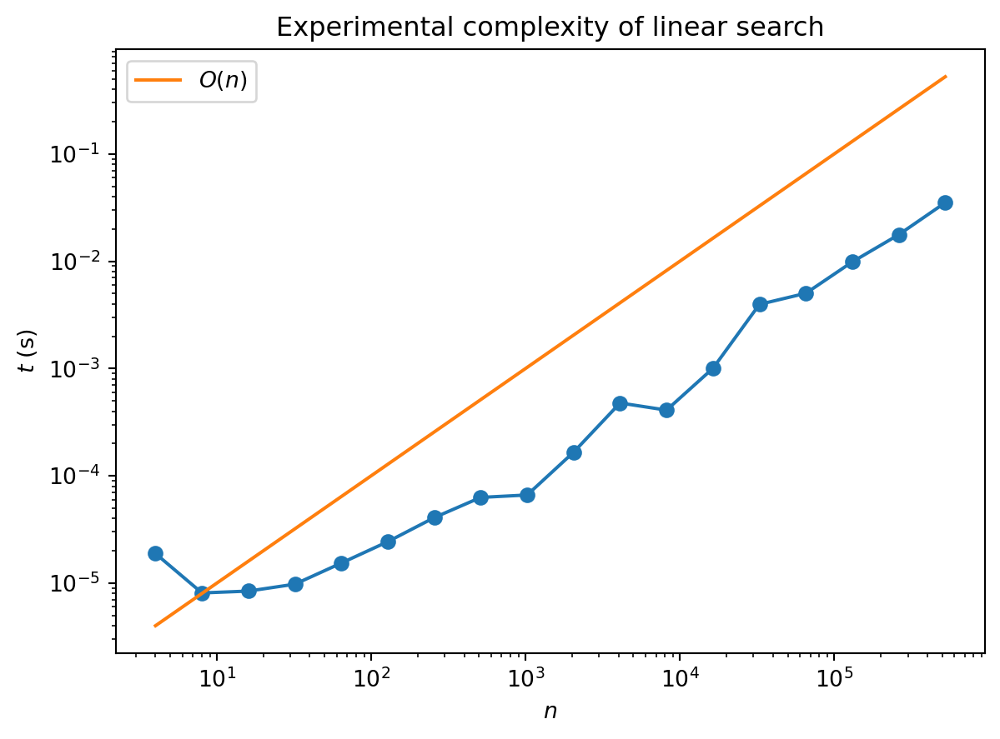
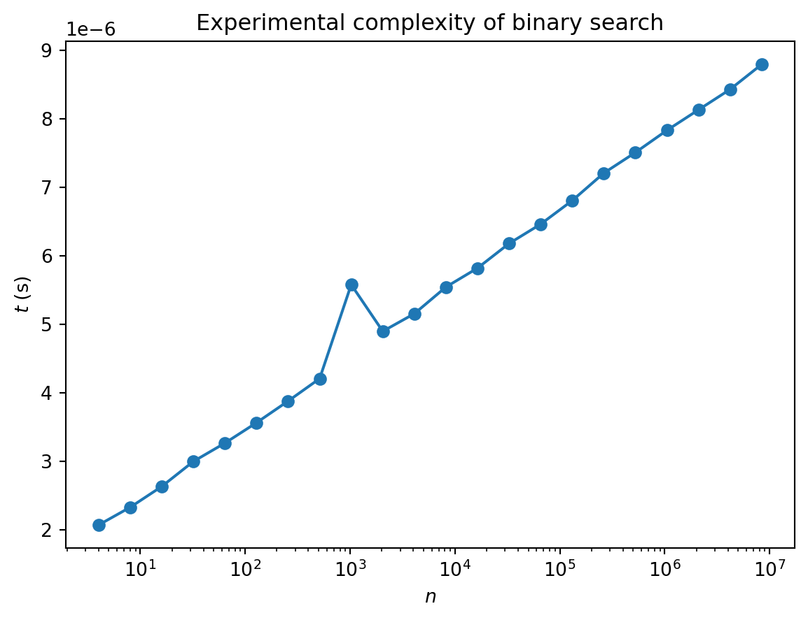

def linear_search(x, val):
"Return True if val is in x, otherwise return False"
for item in x:
if item == val:
return True
return False7 Algorithms and computational complexity
7.1 First example: multiplication
How hard is it to multiply numbers? The bigger they are, the harder it is, as you well know. You also know that computers are very good at multiplying, so once you’ve switched from multiplying numbers yourself to multiplying them on a computer, you may well be tempted to forget about how hard it is. Nevertheless, computers find big numbers harder than small numbers. How much harder?
If you remember how you learnt to multiply numbers at school, it probably went something like this: 1
| × | 1 3 |
2 2 |
3 1 |
|
|---|---|---|---|---|
_ _ 3 |
_ 2 6 |
1 4 9 |
2 6 |
3 |
| 3 | 9 | 4 | 8 | 3 |
For \(n\) digits we have to perform \(n^2\) single digit multiplications. We then have to add together the \(n\) resulting \(n\)-digit numbers. This is another \(n^2\) operations. Thus the overall number of operations is proportional to \(n^2\): doubling the number of digits will make the problem four times harder.
Exactly how long this takes to perform in your head or on a computer will depend on many things, such as how long it takes you to multiply two digits, or get the previous values out of memory (or read them of the page), but you can’t get away from the basic quadratic scaling law of this algorithm.
7.2 Defining complexity
When computer scientists talk about the complexity of a problem, this question of scaling of the number of steps involved is what they have in mind. The complexity of any particular task (or calculation) may vary considerably — evaluating \(100\times 100\) is considerably easier than the general case, for example — so instead we ask about how a particular general algorithm performs on a class of tasks. Such a class is what computer scientists mean when they talk about a problem: multiplication of \(n\) digit numbers is a problem, and any particular pair of \(n\) digit numbers represents an instance of that problem. What we discussed above is a particular algorithm for multiplication that has quadratic complexity, or “\(O(n^2)\) complexity” (say “order \(n\) squared”).
This description only keeps track of how the difficulty scales with the size of the problem. There are various reasons why this level of detail is important:
It allows us to gloss over what exactly we mean by a step. Are we working in base ten or binary? Looking the digit multiplications up in a table or doing them from scratch?
Likewise we don’t have to worry about how the algorithm is implemented exactly in software or hardware, what language we use, and so on.
Inevitably, we always want to look at harder and harder problems with bigger and bigger \(n\) (whatever \(n\) means for the problem at hand). If a simulation finishes for a system of length 10 we immediately want to run it again for length 20, and so on. It then becomes important to know whether our code is going to run for twice as long, four times as long, or \(2^{10}\) times as long (exponential scaling).
7.2.1 Best / worst / average
Even when we focus on a problem in the above sense we still have to be careful in defining the complexity of an algorithm. In general we can characterize three complexities: best case, worse case, and average case. To see the difference between these three consider search, the very simple problem of finding an item in an (unordered) list of length \(n\). How hard is this? You have to check every item until you find the one you are looking for, so this suggests the complexity is \(O(n)\). You could be lucky and get it first try, however, or within the first ten tries. This means the best case complexity of search is \(O(1)\): it doesn’t increase with the size of the problem. The worst thing that could happen is that the sought item is last: the worst case complexity is \(O(n)\). On average, you’ll find your item in the middle of the list on attempt \(\sim n/2\), so the average case complexity is \(O(n/2)\). But this is the same as \(O(n)\) (constants don’t matter)
Thus for linear search we have:
| Complexity | |
|---|---|
| Best case | \(O(1)\) |
| Worst case | \(O(n)\) |
| Average case | \(O(n)\) |
We can check the average case performance experimentally by using randomly chosen lists: 2
import numpy as np
# Create array of problem sizes n we want to test (powers of 2)
N = 2**np.arange(2, 20)
# Generate the array of integers for the largest problem to use in plotting times
x = np.arange(N[-1])
# Initialise an empty array to stores times for plotting
times = []
# Time the search for each problem size
for n in N:
# Time search function (repeating 3 times) to find a random integer in x[:n]
t = %timeit -q -n4 -r1 -o linear_search(x[:n], np.random.randint(0, n))
# Store best case time (best on a randomly chosen problem)
times.append(t.best)Code for plot
import matplotlib.pyplot as plt
# Plot and label the time taken for linear search
plt.loglog(N, times, marker='o')
plt.xlabel('$n$')
plt.ylabel('$t$ (s)')
# Show a reference line of O(n)
plt.loglog(N, 1e-6*N, label='$O(n)$')
# Add legend
plt.legend(loc=0)
plt.title("Experimental complexity of linear search")
plt.show()
The “experimental noise” in these plots arises because we don’t have full control over exactly what our computer is doing at any moment: there are lots of other processes running. Also, it takes a while to reach the linear regime: there is an overhead associated with starting the program that represents a smaller fraction of the overall run time as \(n\) increases.
7.2.2 Polynomial complexity
Since you’ve already learnt a lot of algorithms in mathematics (even if you don’t think of them this way) it’s very instructive to revisit them through the lens of computational complexity.
Multiplying a \(n\)-dimensional vector by a \(n\times n\) matrix?
\[ \begin{align} \sum_{j=1}^n M_{ij}v_j \end{align} \]
The sum contains \(n\) terms, and we have to perform \(n\) such sums. Thus the complexity of this operation is \(O(n^2)\).
Likewise, multiplying two \(n\times n\) matrices
\[ \sum_{j} A_{ij}B_{jk} \]
involves \(n\) terms for each of the \(n^2\) assignments of \(i\) and \(k\). Complexity: \(O(n^3)\)
Thus, if you have to calculate something like \(M_1 M_2\cdots M_n \mathbf{v}\), you should not calculate the matrix product first, but instead do it like this
\[ M_1\left(M_2\cdots \left(M_n \mathbf{v}\right)\right) \]
Wikipedia has a nice summary of computational complexity of common mathematical operations.
If an algorithm has complexity \(O(n^p)\) for some \(p\) it is generally described as having polynomial complexity. A useful heuristic (which is not 100% reliable) is that if you have \(p\) nested loops that range over \(\sim n\), the complexity is \(O(n^p)\) (think how you would implement matrix-vector and matrix-matrix multiplication).
7.2.3 Better than linear?
It seems obvious that for search you can’t do better than linear: you have to look at roughly half the items before you should expect to find the one you’re looking for 3. What if the list is ordered? Any order will do: numerical for numbers, or lexicographic for strings. This extra structure allows us to use an algorithm called binary search that you may have seen before. The idea is pretty intuitive: look in the middle of the list and see if the item you seek should be in the top half or bottom half. Take the relevant half and divide it in half again to determine which quarter of the list your item is in, and so on. Here’s how it looks in code:
def binary_search(x, val):
"""Peform binary search on x to find val. If found returns position, otherwise returns None."""
# Intialise end point indices
lower, upper = 0, len(x) - 1
# If values is outside of interval, return None
if val < x[lower] or val > x[upper]:
return None
# Perform binary search
while True:
# Compute midpoint index (integer division)
midpoint = (upper + lower)//2
# Check which side of x[midpoint] val lies, and update midpoint accordingly
if val < x[midpoint]:
upper = midpoint - 1
elif val > x[midpoint]:
lower = midpoint + 1
elif val == x[midpoint]: # found, so return
return midpoint
# In this case val is not in list (return None)
if upper < lower:
return NoneAnd here’s the performance
Code for plot
# Create array of problem sizes we want to test (powers of 2)
N = 2**np.arange(2, 24)
# Creat array and sort
x = np.arange(N[-1])
x = np.sort(x)
# Initlise an empty array to capture time taken
times = []
# Time search for different problem sizes
for n in N:
# Time search function for finding '2'
t = %timeit -q -n5 -r2 -o binary_search(x[:n], 2)
# Store average
times.append(t.best)
# Plot and label the time taken for binary search
plt.semilogx(N, times, marker='o')
plt.xlabel('$n$')
plt.ylabel('$t$ (s)')
# Change format on y-axis to scientific notation
plt.ticklabel_format(style='sci', axis='y', scilimits=(0,0))
plt.title("Experimental complexity of binary search")
plt.show()
Note the axes: the plot is linear-log, so the straight line indicates logarithmic growth of complexity. This makes sense: if the length is a power of 2 i.e. \(n=2^p\), we are going to need \(p\) bisections to locate our value. The complexity is \(O(\log n)\) (we don’t need to specify the base as overall constants don’t matter).
Here’s another example of logarithm scaling. Exponentiation is the problem of raising a number \(b\) (the base) to the \(n\)th power. The obvious way is to multiply the number by itself \(n\) times. Linear scaling, right? But there’s a quicker way, since
\[ \begin{align} b^2 &= b\cdot b\\ b^4 &= b^2\cdot b^2\\ b^4 &= b^4\cdot b^4 \end{align} \]
We only have to do three multiplications! Exponentiation by this method is \(O(\log n)\). To handle powers that aren’t a power of \(2\), we do the following
\[ b^n = \begin{cases} b^{n/2} \cdot b^{n/2} & \text{if $n$ even} \\ b \cdot b^{n-1} & \text{if $n$ odd} \end{cases} \]
Here’s a way to implement this in code.
def exp(b, n):
if n == 0:
return 1
elif n % 2 == 0:
return exp(b, n // 2)**2
else:
return b * exp(b, n - 1)
exp(2, 6)64This implementation is recursive: the function exp(b, n) calls itself. If this seems a bit self-referential, notice that it only calls itself with lower values of the exponent \(n\). This process continues until we hit \(n=0\), and 1 is returned by the first part of the if ... else. Any recursive function has to have such a base case to avoid an infinite regress. You’ll know if you haven’t provided one correctly:
def exp_no_base_case(b, n):
if n % 2 == 0:
return exp_no_base_case(b, n // 2)**2
else:
return b * exp_no_base_case(b, n - 1)
exp_no_base_case(2, 6)RecursionError: maximum recursion depth exceeded in comparisonOne interesting thing about exponentiation is that while it can be done efficiently, the inverse — finding the logarithm — cannot. To make this more precise one has to work with modular arithmetic i.e. do all operations modulo some number \(m\). Then for \(b, y=0,\ldots m-1\) we are guaranteed that there is some number \(x\) such that \(b^x=y\) (this is called the discrete logarithm). Finding this number is hard: there is no known method for computing it efficiently. Certain public-key cryptosystems are based on the difficulty of the discrete log (for carefully chosen \(b\), \(m\) and \(y\)).
7.2.4 Exponential complexity
While we’re on the subject of recursion, here’s an example that’s often used to introduce the topic: calculating the Fibonacci numbers. Remember that the Fibonacci numbers are this sequence
\[ 0, 1, 1, 2, 3, 5, 8, 13, 21, 34, 55, 89, 144, 233 ... \]
where each new term is obtained by adding together the previous two
\[ \text{Fib}(n) = \text{Fib}(n-1) + \text{Fib}(n-2) \]
The fact that the value \(\text{Fib}(n)\) is defined in terms of lower values of \(n\) makes a recursive definition possible
def fib(n):
if n == 0:
return 0
elif n == 1:
return 1
else:
return fib(n - 1) + fib(n - 2)
fib(13)233The first two terms are the base cases (we need two because the recursion refers to two earlier values). While this looks quite cool it’s actually a terrible way of calculating \(\text{Fib}(n)\). Look at the picture below which illustrates the function calls that are made during the evaluation of \(\text{Fib}(5)\). There are huge amounts of duplication!

The complexity of this algorithm actually grows exponentially with \(n\). Because of the branching structure the algorithm is \(O(2^n)\). Calculating the Fibonacci number the sensible way (i.e. the way you do it in your head) gives an \(O(n)\) algorithm.
It would be nice if exponential complexity were only ever the result of poor choices of algorithm. Unfortunately, this is not the case. It’s possible to come up with problems that definitely can’t be solved faster than exponentially: the Towers of Hanoi is one famous example. Closer to the hearts of physicists, the simulation of a quantum system with \(n\) qubits (a qubit — or quantum bit — is just a computer sciencey word for a spin-1/2) is believed to have complexity \(O(2^n)\), which is a big part of the hype surrounding quantum computers.
There are problems whose solution, once found, is easy to check. The discrete logarithm we mentioned above is one example. Checking involves exponentiation, and exponentiation is \(O(\log n)\) in the size of the numbers, or \(O(n)\) in the number of digits. The question of whether efficient (i.e. polynomial) algorithms always exist for problems which are easy to check is in fact the outstanding problem in computer science: it’s called P vs NP, where P is the class of problems with polynomial time algorithms and NP is the class whose solution can be checked in polynomial time. The question is: are these two classes the same or do they differ? That is, are there problems in NP that aren’t in P? I think it’s fair to say that most people with an opinion on the matter think so, but the proof is lacking (and worth a million dollars).
7.3 Examples of different complexities
A major goal in algorithm design
Hard to overstate how big a deal it is to find a simple algorithm
Summary of asymptotic notation
XKCD plots
7.4 Sorted
7.5 The importance of data structures
Let’s look again at the code for the Wolff algorithm
7.6 Divide and conquer
Karatsuba algorithm nice story
Karatsuba (1995) contains a nice account of the discovery of his algorithm (online version)
Karatsuba algo
Big O
Visualization of sorting algorithms
Simple example from Leetcode
Analaysis of algorithms
Example of finding a unique item in list
Nice examples from Garth Wells
https://github.com/CambridgeEngineering/PartIA-Computing-Michaelmas/blob/main/11%20Complexity.ipynb
Examples of multiplication
Breadth first and depth first
Importance of choosing a data structure to match algorithm
Examples: queue in Wolff. Was there a Numpy-ish way to do this faster? Priority queue in waiting time algo
FFT uses
https://en.wikipedia.org/wiki/Orthogonal_frequency-division_multiplexing
Needleman-Wunsch
Examples
- Multiplication Karatsuba
- Binary search
- Linear algebra
- Sorting
- FFT
- Taking powers (SICP). What is \(n\) in this case?
- Euclidean algorithm (GCD) (SICP)
References. Nature of computation, grokking algos
Insertion in a list etc.
7.7 Space vs. time complexity
Sticking with integers↩︎
I’ve borrowed this example from Garth Wells’ course↩︎
Grover’s algorithm for search has \(O(\sqrt{n})\) complexity, but there’s a catch: you need a quantum computer, and even then a \(\sqrt{n}\) speedup is not going to get you a billion dollars in this economy.↩︎